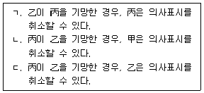
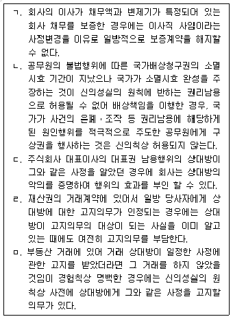
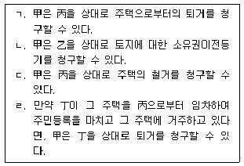
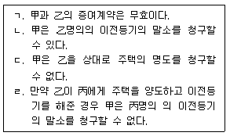
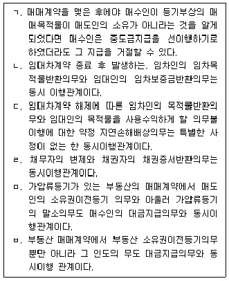

변리사-1차(2교시) (2018-03-17 기출문제)
1. 소멸시효에 관한 설명으로 옳은 것은? (다툼이 있으면 판례에 따름)
- 부작위채권은 권리의 불행사가 있을 수 없으므로 소멸시효의 대상이 되지 않는다.
- 주채무자가 시효완성의 이익을 포기한 경우 보증인은 주채무의 시효소멸을 원용할 수 없다.
- “시효의 중단은 당사자 및 그 승계인 간에만 효력이 있다”는 규정(민법 제169조)에서 ‘승계인’에는 특정승계인이 포함되지 아니한다.
- 기한을 정하지 않은 채권의 소멸시효의 기산점은 채권이 발생된 때가 아니라 이행청구를 받은 때이다.
- 단기 소멸시효에 걸리는 채권이라도 판결에 의하여 확정되면 그 소멸시효기간은 10년이다.
(정답률: 알수없음)

2. 법률행위의 무효와 취소에 관한 설명으로 옳은 것은? (다툼이 있으면 판례에 따름)
- 법률행위가 무효임을 알고 당사자가 추인한 때에는 새로운 법률행위로 추정한다.
- 취소할 수 있는 법률행위의 상대방이 확정된 경우에는 그 취소는 그 상대방에 대한 의사표시로 하여야 한다.
- 취소권은 법률행위를 추인할 수 있는 날로부터 5년 뒤에도 소멸하지 않는다.
- 폭리행위는 그 무효원인이 해소되지 않았더라도 당사자의 추인이 있으면 유효로 될 수 있다.
- 미성년을 이유로 취소할 수 있다는 사실을 알고 법정대리인의 동의 없이 법률행위를 한 미성년자가 그 법률행위를 적법하게 취소한 경우, 미성년자는 그 행위로 받은 이익에 이자를 붙여서 반환하여야 한다.
(정답률: 알수없음)
3. 관습법과 관습에 관한 설명으로 옳은 것은? (다툼이 있으면 판례에 따름)
- 온천에 관한 권리는 관습법상의 물권이나 준물권이라고 볼 수 없다.
- 관습법은 사회의 거듭된 관행과 법적 확신이 없어도 성립된다.
- 관습은 당사자의 주장ㆍ입증을 기다림이 없이 법원이 직권으로 이를 확정하여야한다.
- 공동선조와 성과 본을 같이하는 후손이면 미성년자라도 성별의 구별 없이 당연히 종중의 구성원이 된다.
- 관습법이 사회생활규범으로 승인되었다면 사회를 지배하는 기본적 이념이나 사회질서의 변화로 인하여 그 관습법을 적용하여야 할 시점에 있어서의 전체 법질서에 부합하지 않게 되었더라도 그 법규범으로서의 효력이 인정된다.
(정답률: 알수없음)
4. 미성년자에 관한 설명으로 옳은 것은? (다툼이 있으면 판례에 따름)
- 미성년자는 임의대리인이 될 수 없다.
- 법정대리인이 미성년자에게 영업을 허락한 후 그 허락을 취소한 경우에 미성년자는 그 영업허락의 취소 전에 그 영업을 위하여 한 상품주문행위를 미성년임을 이유로 취소할 수 없다.
- 미성년자가 법정대리인의 동의 없이 법률행위를 한 경우에 법정대리인의 취소권이 기간경과로 소멸되지 않는 한, 미성년자는 성년이 되기 전까지만 취소할 수 있고 성년이 된 후에는 취소할 수 없다.
- 甲이 乙과 계약을 체결할 당시 乙이 미성년자임을 알고 계약했더라도 甲은 철회권을 행사할 수 있다.
- 미성년자가 법정대리인의 동의 없이 법률행위를 하면서 특약에 의하여 미성년을 이유로 한 취소를 하지 않기로 한 경우에는 미성년을 이유로 그 법률행위를 취소할 수 없다.
(정답률: 알수없음)
5. 반사회질서행위의 효과에 관한 설명으로 옳지 않은 것은? (다툼이 있으면 판례에 따름)
- 도박자금에 제공할 목적으로 금전을 대차한 때에 그 대차계약으로 인한 금전의 반환을 청구할 수 없다.
- 반사회질서행위의 무효는 이를 주장할 이익이 있는 자라면 누구든지 그 무효를 주장할 수 있다.
- 법률행위의 성립과정에 강박이라는 불법적 방법이 사용된 데에 불과한 때에는 반사회질서행위로서 무효라고 할 수는 없다.
- 본처가 남편의 과거 부첩(夫妾)관계를 용서한 때에는 그것이 손해배상청구권의 포기라고 해석되는 한 그대로의 법적 효력이 인정될 수 있다.
- 법률행위가 반사회질서행위로 무효인지 여부는 그 효력이 발생한 때를 기준으로 판단하여야 한다.
(정답률: 알수없음)
6. 甲의 대리인 乙은 계약의 체결과 취소 등 포괄적인 대리권을 수여받아 甲의 대리인으로서 丙과 계약을 체결하였다. 이에 관한 설명으로 옳은 것을 모두 고른 것은? (다툼이 있으면 판례에 따름)

- ㄱ
- ㄴ
- ㄱ, ㄷ
- ㄴ, ㄷ
- ㄱ, ㄴ, ㄷ
(정답률: 알수없음)
7. 권리능력 없는 사단에 관한 설명으로 옳은 것은? (다툼이 있으면 판례에 따름)
- 권리능력 없는 사단의 구성원은 그가 사단의 대표자이거나 사원총회의 결의를 거쳤다 하더라도 그 사단의 재산에 관한 제3자와의 소송에서 당사자가 될 수 없다.
- 권리능력 없는 사단의 사원이 집합체로서 물건을 소유한 경우에는 합유로 한다.
- 권리능력 없는 사단에 구성원이 없게 되었다면 그 사단은 바로 소멸하여 소송상의 당사자능력을 상실한다.
- 권리능력 없는 사단의 대표자는 필요한 경우에 자신의 업무를 타인에게 포괄적으로 위임할 수 있다.
- 권리능력 없는 사단의 사원의 지위는 규약에 의해서라도 양도나 상속될 수 없다.
(정답률: 알수없음)
8. 신의성실의 원칙에 관한 설명으로 옳은 것을 모두 고른 것은? (다툼이 있으면 판례에 따름)

- ㄱ, ㄴ, ㄹ
- ㄱ, ㄴ, ㅁ
- ㄱ, ㄷ, ㅁ
- ㄴ, ㄷ, ㄹ
- ㄷ, ㄹ, ㅁ
(정답률: 알수없음)
9. 법인의 이사에 관한 설명으로 옳은 것은? (다툼이 있으면 판례에 따름)
- 법인의 정관에 법인 대표권의 제한에 관한 규정이 있다면, 그러한 취지가 등기되어 있지 않은 경우에도 법인은 그 제한으로써 악의의 제3자에게 대항할 수 있다.
- 법인의 정관에 이사의 해임사유에 관한 규정이 있는 경우에는 이사의 중대한 의무위반이 있더라도 법인은 정관에서 정하지 아니한 사유로 이사를 해임할 수 없다.
- 법인과 이사의 법률관계는 신뢰를 기초로 한 위임 유사의 관계이고, 위임계약은 원래 해지의 자유가 인정되어 쌍방 누구나 정당한 이유 없이도 언제든지 해지할 수 있으며, 다만 불리한 시기에 부득이한 사유 없이 해지한 경우에 한하여 상대방에게 그로 인한 손해배상책임을 부담할 뿐이다.
- 이사의 임기가 만료되었더라도 아직 임기가 만료되지 아니한 다른 이사들로 법인이 정상적인 활동을 할 수 있는 경우에는 임기만료된 이사로 하여금 이사로서 직무를 행사하게 할 필요가 없고, 법인의 정상적인 활동이 가능한지 여부는 이사의 임기만료시뿐만 아니라 이후의 사정까지도 종합적으로 고려하여 판단하여야 한다.
- 대표권 없는 이사도 법인의 기관이므로 그의 행위로 인하여 민법 제35조 소정의 법인의 불법행위가 성립할 수 있다.
(정답률: 알수없음)
10. 의사능력에 관한 설명으로 옳지 않은 것은? (다툼이 있으면 판례에 따름)
- 의사능력이란 자신의 행위의 의미나 결과를 정상적인 인식력과 예기력을 바탕으로 합리적으로 판단할 수 있는 정신적 능력 내지 지능을 말한다.
- 의사능력의 유무는 구체적인 법률행위와 관련하여 개별적으로 판단되어야 한다.
- 미성년자가 의사무능력 상태에서 법정대리인의 동의 없이 법률행위를 한 경우, 법정대리인은 미성년을 이유로 법률행위를 취소할 수 있다.
- 어떤 법률행위에 그 일상적인 의미만을 이해하여서는 알기 어려운 특별한 법률적인 의미나 효과가 부여되어 있는 경우에도 의사능력이 인정되기 위하여 그 행위의 일상적인 의미에 대한 이해만으로 족하고 법률적인 의미나 효과에 대한 이해는 요구되지 않는다.
- 의사무능력자의 법률행위에 있어서는 그 행위의 무효를 주장하는 자가 의사능력이 없었음을 증명하여야 한다.
(정답률: 알수없음)
11. 복대리에 관한 설명으로 옳은 것은? (다툼이 있으면 판례에 따름)
- 복대리인은 대리인의 대리인이다.
- 임의대리인은 그 책임으로 언제든지 복대리인을 선임할 수 있다.
- 대리인이 대리권 소멸 후 선임한 복대리인과 상대방 사이의 법률행위에도 상대방이 대리권 소멸 사실을 알지 못하여 복대리인에게 적법한 대리권이 있는 것으로 믿었고 그와 같이 믿은 데 과실이 없다면, 대리권소멸 후의 표현대리(민법 제129조)가 성립할 수 있다.
- 법정대리인이 부득이한 사유로 복대리인을 선임한 경우에는 그 부적임 또는 불성실함을 알고 본인에 대한 통지나 그 해임을 태만한 때가 아니면 책임이 없다.
- 대리인의 사망으로 대리권이 소멸한 경우에도 복대리권은 소멸하지 않는다.
(정답률: 알수없음)
12. 물건에 관한 설명으로 옳지 않은 것은? (다툼이 있으면 판례에 따름)
- 특정물과 불특정물의 구별은 당사자의 의사에 따른 주관적인 구별이다.
- 종물은 주물의 일부이거나 구성부분이어야 한다.
- 관리할 수 있는 전기는 동산이다.
- 건물을 사용함으로써 얻는 이득은 그 건물의 과실에 준하는 것이다.
- 수확되지 아니한 성숙한 쪽파와 같은 농작물 매매에 있어서 매수인이 그 소유권을 취득하기 위해서는 명인방법을 갖추어야 한다.
(정답률: 알수없음)
13. 법률의 규정에 의한 부동산 물권변동에 관한 설명으로 옳지 않은 것은? (다툼이 있으면 판례에 따름)
- 상속재산인 부동산에 관하여 상속등기를 하지 않았더라도, 상속인은 상속이 개시된 때에 그 부동산의 소유권을 취득한다.
- 공용징수를 위한 수용절차에서 재결에 의하여 토지가 수용되는 경우, 보상금을 공탁한 사업시행자는 수용의 개시일에 그 토지의 소유권을 취득한다.
- 자기의 노력과 비용으로 건물을 신축한 자는 그 건축허가가 타인의 명의로 된경우에도 그 건물의 소유권을 원시취득한다.
- 공유물분할의 조정절차에서 공유자 사이에 공유토지에 대한 현물분할의 조정이 성립한 경우, 각 공유자는 조정에 기하여 지분이전등기를 마침으로써 분할된 부분에 대한 소유권을 취득한다.
- 민사집행법에 따른 경매를 통하여 부동산을 매수한 경우, 매수인은 경매법원의 촉탁에 의한 이전등기가 경료된 때에 소유권을 취득한다.
(정답률: 알수없음)
14. 甲과 乙의 점유에 관한 설명으로 옳지 않은 것은? (다툼이 있으면 판례에 따름)
- 甲이 그 소유건물을 乙에게 임대함으로써 현실적으로 건물이나 그 부지를 점거하고 있지 않으면, 甲은 그 부지를 점유한다고 볼 수 없다.
- 甲이 신축한 미등기건물을 양수하여 건물에 대한 사실상의 처분권을 보유하게 된 乙은 그 건물의 부지도 함께 점유하고 있다고 볼 수 있다.
- 甲이 신축한 건물의 경비원 乙이 甲의 지시를 받아 건물을 사실상 지배하고 있더라도 특별한 사정이 없는 한 乙은 그 건물의 점유자가 되지 못한다.
- 甲이 그 소유건물을 乙에게 임대하여 인도한 경우에도 甲에게 점유권이 인정된다.
- 甲명의로 토지에 대한 소유권보존등기를 마쳤다면, 특별한 사정이 없는 한 甲이 그 등기 당시 그 토지의 점유를 이전받았다고 인정할 수 없다.
(정답률: 알수없음)
15. 甲명의로 등기된 甲소유 토지에 관해 乙이 관계서류를 위조하여 자기 명의 로 이전등기를 한 뒤 丙에게 임대하였고, 丙은 그 토지 위에 주택을 완성하여 보존등기를 하고 현재까지 그 주택에 거주하고 있다. 이에 관한 설명으로 옳은 것을 모두 고른 것은? (다툼이 있으면 판례에 따름)

- ㄱ, ㄴ
- ㄱ, ㄹ
- ㄴ, ㄷ
- ㄴ, ㄷ, ㄹ
- ㄱ, ㄴ, ㄷ, ㄹ
(정답률: 알수없음)
16. 법정지상권에 관한 설명으로 옳지 않은 것은? (다툼이 있으면 판례에 따름)
- 토지에 관하여 1번 저당권 설정 당시 건물이 건축 중이던 경우에도 건물의 규모, 종류를 예상할 수 있었다면 법정지상권이 성립할 수 있다.
- 토지에 관하여 1번 저당권 설정 당시 건물이 존재하였다면, 그 후 그 건물을 철거하고 동일한 규모의 건물을 신축한 경우에도 법정지상권이 성립할 수 있다.
- 동일인 소유의 토지와 지상건물에 관하여 공동저당권을 설정한 후, 그 건물을 철거하고 새로 건물을 신축한 경우에는 특별한 사정이 없는 한 법정지상권이 성립하지 않는다.
- 지상건물이 없는 토지에 관하여 1번 저당권을 설정할 당시 저당권자가 그 토지에 건물을 축조하는 것에 동의하였다면 법정지상권이 성립할 수 있다.
- 토지공유자 한 사람이 다른 공유자 지분 과반수의 동의를 얻어 건물을 건축한 후 경매로 인하여 토지와 건물의 소유자가 달라진 경우 법정지상권이 성립하지 않는다.
(정답률: 알수없음)
17. 점유취득시효에 관한 설명으로 옳은 것은? (다툼이 있으면 판례에 따름)
- 취득시효 완성 후 등기 경료 전에 그 부동산이 제3자에게 명의신탁된 경우, 점유자는 시효완성을 이유로 그 제3자의 소유권 행사를 저지할 수 없다.
- 취득시효 기간의 계산에 있어 시효기간 동안 소유자에 변경이 없는 경우에는 그 기산점을 어디에 두던지 간에 취득시효 완성을 주장할 수 있는 시점에서 보아 그 기간이 경과된 사실이 확정되면 된다.
- 甲의 취득시효 완성 당시 미등기로 남아 있던 토지의 소유자가 취득시효 완성후에 그 명의로 소유권보존등기를 마쳤다면, 甲은 토지소유자에 대하여 취득시효의 완성을 주장할 수 없다.
- 국유재산이 일반재산이던 당시에 취득시효가 완성되었다면 그 후 행정재산으로 되었다고 하더라도 시효취득을 원인으로 하는 소유권이전등기를 청구할 수 있다.
- 점유자가 취득시효기간이 경과한 후 소유자와의 분쟁을 간편하게 해결하기 위하여 상대방에게 매수제의를 하였다면, 점유자의 점유는 타주점유로 전환된다.
(정답률: 알수없음)
18. 甲은 자신이 소유하는 건물을 乙에게 매도한 뒤 인도하였고, 乙은 이를 다시 丙에게 매도한 뒤 인도하였다. 이에 관한 설명으로 옳은 것은? (다툼이 있으면 판례에 따름)
- 乙이 무자력이 아닌 경우 丙은 乙의 甲에 대한 이전등기청구권을 대위행사할 수 없다.
- 甲, 乙, 丙전원의 합의가 없더라도, 丙은 甲에게 직접 이전등기를 청구할 수 있다.
- 甲에서 직접 丙에게 이전등기하는 것에 관해 甲, 乙, 丙전원의 합의가 있었으나, 甲과 乙사이의 매매가 적법하게 합의해제된 경우, 甲은 丙의 이전등기청구를 거절할 수 없다.
- 甲에서 丙으로 직접 이전등기가 된 경우, 乙과 丙이 대금을 완제했더라도 甲은 중간생략등기의 합의가 없다는 이유로 丙명의의 등기의 말소를 청구할 수 있다.
- 만약 乙이 甲으로부터 丙으로 이전등기하는 것에 동의했더라도, 乙은 甲에 대한 이전등기청구권을 잃지 않는다.
(정답률: 알수없음)
19. 甲소유 부동산에 乙명의로 소유권이전등기청구권 보전을 위한 가등기가 경료된 후 甲에서 丙명의로 매매를 원인으로 한 소유권이전등기가 경료되었다. 이에 관한 설명으로 옳은 것은? (다툼이 있으면 판례에 따름)
- 甲이 丙에게 한 처분행위는 특별한 사정이 없는 한 무효이다.
- 乙의 甲에 대한 본등기청구권은 乙의 가등기가 존속하는 동안 소멸시효에 걸리지 않는다.
- 乙이 甲에게 본등기를 청구하여 乙명의로 본등기가 이루어지면, 丙의 등기는 직권말소된다.
- 乙이 가등기에 기한 본등기를 하면, 乙의 소유권취득의 효력은 가등기를 한 때 로 소급한다.
- 丙명의의 소유권이전등기가 원인무효라면 가등기권리자인 乙이 직접 그 말소를 구할 수 있다.
(정답률: 알수없음)
20. 동산 선의취득에 관한 설명으로 옳은 것은? (다툼이 있으면 판례에 따름)
- 甲소유의 동산을 乙이 丙에게 양도하고 丙이 다시 丁에게 양도한 경우, 만약 丙의 선의취득이 인정된다면 丁의 선의취득 여부는 문제되지 않는다.
- 반환청구권의 양도에 의한 소유권의 양도의 경우에는 대항요건을 갖추었더라도 선의취득이 인정되지 않는다.
- 甲이 자신의 소유 동산을 乙에게 매도하여 인도하고, 乙이 다시 丙에게 매도하여 인도한 경우, 甲과 乙의 매매가 사회질서에 반하여 무효라면 丙은 선의, 무과실이더라도 선의취득할 수 없다.
- 점유보조자가 횡령한 물건은 민법 제250조(도품, 유실물에 대한 특례)의 도품에 해당한다.
- 甲소유 동산을 점유하는 乙이 丙에게 매도함과 동시에 丙으로부터 임차하기로 약정한 경우 丙은 현실인도를 받기 전이라도 그 동산을 선의취득할 수 있다.
(정답률: 알수없음)
21. 지역권에 관한 설명으로 옳지 않은 것은? (다툼이 있으면 판례에 따름)
- 무상의 지역권 설정도 가능하다.
- 요역지의 불법점유자는 지역권을 시효취득할 수 없다.
- 지역권자 甲이 그 소유 토지를 乙에게 매도하고 이전등기한 경우, 특별한 사정이 없는 한 乙은 지역권의 이전등기 없이는 지역권을 취득하지 못한다.
- 지역권자는 승역지의 점유를 침탈한 제3자를 상대로 지역권에 기초하여 승역지의 반환을 청구할 수 없다.
- 요역지를 여러 사람이 공유하는 경우 공유자 중 한 사람에 대한 지역권의 소멸시효 중단은 다른 공유자를 위하여 효력이 있다.
(정답률: 알수없음)
22. 공유에 관한 설명으로 옳지 않은 것은? (다툼이 있으면 판례에 따름)
- 제3자가 공유물의 이용을 방해하고 있는 경우 각 공유자는 그의 지분에 기하여 단독으로 공유물 전부에 대한 방해의 제거를 청구할 수 있다.
- 제3자가 공유물의 이용을 방해하고 있는 경우 각 공유자는 제3자에 대하여 자신의 지분의 비율에 해당하는 부분에 한하여 부당이득의 반환을 청구할 수 있다.
- 공유물분할의 소는 공유자 전원이 당사자로 되어야 하므로, 원고를 제외한 공유자 모두가 피고로 된다.
- 부동산 공유자의 공유지분 포기의 의사표시가 다른 공유자에게 도달하더라도 등기를 하여야 공유지분 포기에 따른 물권변동의 효력이 발생한다.
- 공유자 중 1인이 다른 공유자의 동의 없이 공유토지 전부를 매도하여 타인 명의로 소유권이전등기가 마쳐진 경우, 다른 공유자는 그 공유물 전부에 관해 소유권이전등기의 말소를 청구할 수 있다.
(정답률: 알수없음)
23. 민법상의 유치권에 관한 설명으로 옳은 것은? (다툼이 있으면 판례에 따름)
- 세금체납을 이유로 한 체납처분압류가 되어 있는 부동산에 대한 경매절차가 개시되기 전에 유치권을 취득한 유치권자는 그 경매절차의 매수인에게 유치권을 주장할 수 없다.
- 아직 변제기에 이르지 아니한 채권에 기해서는 유치권을 행사할 수 없다.
- 매도인이 중도금만 받고서 매수인에게 부동산의 소유권을 이전한 경우, 매도인은 잔금채권을 피담보채권으로 하여 매수인에 대하여 유치권을 행사할 수 있다.
- 부동산 근저당권에 기한 압류의 효력이 발생한 후에 취득한 유치권으로 그 근저당권에 기한 경매절차의 매수인에게 대항할 수 있다.
- 건물신축공사를 도급받은 수급인이 사회통념상 독립한 건물이 되지 못한 정착물을 토지에 설치한 상태에서 공사가 중단된 경우, 토지에 대하여 유치권을 행사할 수 있다.
(정답률: 알수없음)
24. 甲男은 乙女와 부첩(夫妾)관계를 맺고, 그 대가로 자신이 소유하는 주택을 乙에게 증여하여 乙앞으로 소유권이전등기를 해주었다. 현재 乙은 위 주택에서 거주하고 있다. 다음 보기 중 옳은 설명을 모두 고른 것은? (다툼이 있으면 판례에 따름)

- ㄱ, ㄴ
- ㄱ, ㄷ
- ㄴ, ㄹ
- ㄱ, ㄷ, ㄹ
- ㄴ, ㄷ, ㄹ
(정답률: 알수없음)
25. 채권자지체에 관한 설명으로 옳은 것은? (다툼이 있으면 판례에 따름)
- 채권자지체 중에 채무자가 채권의 목적물을 보관하던 중 그의 경과실로 목적물이 멸실된 경우, 채무자는 그 멸실로 인한 책임이 없다.
- 채권자지체 중에 이행불능이 된 경우, 채권자지체가 발생한 사실에 대한 증명책임은 채권자에게 있다.
- 채권자지체로 인하여 채권의 목적물을 보관 또는 변제하기 위한 비용이 증가된 때에 그 증가액은 채무자가 부담한다.
- 이자 있는 채권의 경우에 채권자지체 중에도 채무자는 이자를 지급할 의무가 있다.
- 민법 제538조 제1항의 ‘채권자의 수령지체 중에 당사자 쌍방의 책임 없는 사유로 채무를 이행할 수 없게 된 때’에 해당하기 위해서 채무자의 현실 제공 또는 구두 제공이 필요한 것은 아니다.
(정답률: 알수없음)
26. 채권자취소권에 관한 설명으로 옳은 것은? (다툼이 있으면 판례에 따름)
- 채무자의 법률행위가 통정허위표시로 무효인 경우에는 채권자취소권의 대상이 될 수 없다.
- 매매계약을 원인으로 하는 가등기에 기하여 본등기가 경료된 경우, 사해행위 요건의 구비 여부는 특별한 사정이 없는 한 본등기를 한 시점을 기준으로 판단하여야 한다.
- 부동산이 이중(二重)으로 매도되고 제2매수인에게 소유권이전등기가 이루어진 경우, 제1매수인은 자신의 소유권이전등기청구권을 보전하기 위하여, 매도인과 제2매수인 사이에 이루어진 양도행위에 대하여 채권자취소권을 행사할 수 없다.
- 채무자가 저당권이 설정되어 있는 자신의 유일한 재산을 양도한 경우, 저당권의 피담보채권액이 그 재산의 가액을 초과하더라도 당해 재산의 양도는 사해행위에 해당한다.
- 채권자가 채무자와 수익자 사이의 부동산매매계약을 사해행위로 취소함에 따라 수익자 명의의 소유권이전등기가 말소되어 채무자의 등기명의가 회복된 경우, 채무자는 그 부동산의 소유권을 제3자에게 유효하게 양도할 수 있다.
(정답률: 알수없음)
27. 甲은 자신이 사용하던 노트북 X, Y 중에 하나를 乙에게 팔기로 하였고, 대금 지급일에 乙이 선택하기로 하였다. 그런데 대금지급일 전에 甲이 X노트북을 丙에게 매도하고 인도까지 해주었다. 이에 관한 설명으로 옳은 것은? (다툼이 있으면 판례에 따름)
- 乙이 Y노트북을 선택하고 그 의사를 甲에게 전달한 경우, 乙은 특별한 사정이 없는 한 甲의 동의 없이도 이를 철회할 수 있다.
- 乙은 Y노트북을 선택하면서 조건을 붙일 수 있다.
- 乙이 X노트북을 선택하더라도 채권의 목적물은 Y노트북으로 확정된다.
- 乙은 X노트북을 선택하고 丙에게 X노트북의 반환을 청구할 수 있다.
- 乙은 X노트북을 선택하고 甲에게 채무불이행을 이유로 손해배상을 청구할 수 있다.
(정답률: 알수없음)
28. 甲, 乙, 丙이 균등한 부담으로 丁에 대하여 6천만원의 연대채무를 부담하고 있다. 이에 관한 설명으로 옳지 않은 것은?
- 甲이 丁에 대한 4천만원의 반대채권을 가지고 유효하게 상계한 경우, 丙은 2천만원의 채무를 면한다.
- 乙이 6천만원의 지급에 갈음하여 丁에게 자신의 주택의 소유권이전을 내용으로 하는 경개계약을 체결한 경우, 甲과 丙의 丁에 대한 연대채무는 소멸한다.
- 甲이 丁에게 6천만원을 변제하고 과실(過失) 없이 바로 乙과 丙에게 구상하려는데 乙이 무자력이 된 경우, 甲은 丙에게 3천만원을 구상할 수 있다.
- 丁이 丙의 채무를 면제한 경우, 甲과 乙은 丁에 대해 4천만원에 대하여 연대채무를 부담한다.
- 甲이 乙과 丙에게 사전통지를 하지 않은 채 丁에게 채무 전부를 변제하고 乙과 丙에게 구상권을 행사하였는데 乙이 甲의 변제 전에 丁에 대하여 4천만원의 상계적상인 반대채권을 갖고 있었던 경우, 乙의 丁에 대한 채권은 2천만원에 한하여 甲에게 이전된다.
(정답률: 알수없음)
29. 乙은 丙으로부터 부동산을 매수하면서 甲에게 자신의 대금지급채무의 보증을 부탁하였고, 이에 따라 甲은 丙과 보증계약을 체결하였다. 이에 관한 설명으로 옳은 것은? (다툼이 있으면 판례에 따름)
- 丙이 보증계약 후 乙의 변제기를 연장해 준 경우, 특별한 사정이 없는 한 甲은 주채무의, 보증계약 당시의 이행기가 되더라도 乙에게 미리 구상권을 행사할 수 없다.
- 甲이 丙에게 변제한 이후 乙과 丙의 계약이 해제되어 소급적으로 소멸한 경우, 甲은 丙을 상대로 이미 이행한 급부를 부당이득으로 반환청구할 수 없다.
- 乙이 채무를 변제하고도 그 사실을 甲에게 통지하지 않고 있던 중에 甲이 이러한 사실을 모르고 乙에 대한 사전통지 없이 채무를 변제한 경우, 甲은 乙에 대하여 자기의 변제가 유효함을 주장할 수 없다.
- 丙이 乙에 대한 대금채권을 실행하기 위해 乙의 재산을 압류하더라도 甲의 보증채무의 소멸시효는 중단되지 않는다.
- 甲이 변제로 乙의 채무를 소멸시킨 경우, 甲은 乙이 그 당시에 이익을 받은 한도에서 구상할 수 있다.
(정답률: 알수없음)
30. 甲이 乙에게 자신의 주택을 매도한 후에 乙에 대한 매매대금채권을 丙에게 양도하였다. 이에 관한 설명으로 옳지 않은 것은? (다툼이 있으면 판례에 따름)
- 乙은 丙에게 채권양도에 대한 승낙을 하면서 조건을 붙일 수 있다.
- 甲으로부터 채권양도통지 권한을 위임받은 丙이 대리관계를 현명하지 않고 丙명의의 채권양도통지서를 乙에게 발송하여 도달한 경우, 특별한 사정이 없는 한 그 양도통지는 효력이 없다.
- 甲이 乙에게 채권양도 사실을 통지한 후에 乙이 甲에게 금전을 빌려주었다면, 乙은 그 대여금반환채권에 의한 상계로써 丙에게 대항할 수 없다.
- 채권양도에 대한 乙의 승낙이 있은 후에 채권양도계약이 해제되어 甲이 乙에게 양도철회통지를 한 경우, 乙은 이로써 丙의 채무이행청구에 대하여 대항할 수 있다.
- 甲이 乙에게 채권양도의 사실을 통지하였으나 양도행위가 적법하게 취소된 경우, 乙이 이 사실을 모르고 丙에게 변제하였다면 이를 가지고 甲에게 대항할 수 있다.
(정답률: 알수없음)
31. 채무인수에 관한 설명으로 옳은 것은? (다툼이 있으면 판례에 따름)
- 채무인수인은 특별한 의사표시가 없으면 자신의 구(舊)채무자에 대한 항변사유를 가지고 채권자에게 대항할 수 있다.
- 채무자와 인수인 사이의 계약에 의해 채무인수가 이루어지는 경우, 채권자가 승낙을 거절하면 이후에 다시 승낙을 하더라도 면책적 채무인수의 효력이 발생하지 않는다.
- 토지매수인이 토지에 관한 매도인의 채무를 인수하면서 그 채무액을 매매대금에서 공제하기로 약정한 경우, 특별한 사정이 없는 한 면책적 채무인수에 해당한다.
- 채무자 아닌 제3자가 설정한 근저당권에 관하여 그 제3자의 동의를 얻어 채무인수를 원인으로 채무자를 교체하는 변경등기가 마쳐졌다면, 특별한 사정이 없는 한 그 근저당권은 그 후 채무인수인이 다른 원인으로 부담하는 채무까지 담보한다.
- 채무자와 인수인 간의 중첩적 채무인수계약의 경우에 채권자는 인수인에 대하여 수익의 의사표시 없이도 직접 청구할 권리를 갖는다.
(정답률: 알수없음)
32. 甲이 乙에게 5천만원을 빌릴 때 丙은 甲을 위한 보증인이 되었다. 丁은 乙에 대하여 3천만원의 공사대금채권을 갖고 있으며, 甲은 乙에 대하여 2천만원의 채권을 갖고 있다. 이에 관한 설명으로 옳지 않은 것은? (모든 채무는 상계적상에 있음을 가정하며, 다툼이 있으면 판례에 따름)
- 甲과 乙상호간의 채권이 상계로 인해 소멸하는 경우, 그 효력은 각 채무가 상계할 수 있는 때로 소급하여 발생한다.
- 丙은 甲의 乙에 대한 위 금전채권에 의한 상계로 乙에게 대항할 수 있다.
- 甲과 乙이 상계금지 특약을 하였는데, 乙에 대해 보증금반환채무를 부담하는 A가 그 특약 사실을 모른 채 甲의 乙에 대한 위 금전채권을 양수하고 채권양도의 대항요건을 갖춘 경우, A는 그 양수채권을 가지고 乙에 대한 자신의 채무와 상계할 수 있다.
- 만약 丁이 乙의 甲에 대한 대여금채권을 압류한 이후에 甲이 乙에게 자동차를 매도하여 위 금전채권을 취득하였다면, 甲은 乙에 대한 위 금전채권에 의한 상계로써 丁에게 대항할 수 있다.
- 만약 甲의 乙에 대한 위 금전채권이 고의의 불법행위로 인한 것이라면, 甲은 이를 자동채권으로 하여 상계할 수 있다.
(정답률: 알수없음)
33. 甲은 자신이 소유하는 토지를 乙에게 매도하고 중도금까지 받았는데, 乙에게 그 토지에 대한 소유권이전등기를 넘기지 않은 상태에서 甲이 丙에게 다시 그 토지를 매도하고, 丙명의로 소유권이전등기까지 마쳤다. 이에 관한 설명으로 옳은 것은? (다툼이 있으면 판례에 따름)
- 乙이 甲과의 계약을 해제하기 위해서는 상당한 기간을 정해 이행을 최고하여야한다.
- 乙이 甲과의 계약을 해제하면 乙은 甲에 대해 원상회복청구권을 갖는데, 그 권리의 소멸시효는 해제권이 발생한 때로부터 진행한다.
- 乙이 甲과의 계약을 해제하기 위해서는 甲의 소유권이전등기의무와 동시이행관계에 있는 잔대금지급의무의 이행제공을 하여야 한다.
- 만약 丙이 아직 甲에게 매매대금을 지급하지 않았다면, 乙은 甲과의 계약을 해제하지 않고 丙을 상대로 甲에게 지급할 매매대금을 자신에게 대상(代償)으로 지급하라고 청구할 수 있다.
- 만약 丁이 甲의 乙에 대한 채무의 이행을 보증하였고 乙이 甲의 채무불이행을 이유로 계약을 해제하였다면, 丁은 특별한 사정이 없는 한 甲의 乙에 대한 원상회복의무에 대해 책임을 부담한다.
(정답률: 알수없음)
34. 임차보증금에 관한 설명으로 옳지 않은 것은? (다툼이 있으면 판례에 따름)
- 건물 임차인은 임대인에게 지급한 보증금의 반환을 위하여 그 임차목적물에 대해 유치권을 주장할 수 없다.
- 임차인의 차임연체를 이유로 임대차계약이 해지되어, 임대인이 임차목적물의 인도와 연체차임의 지급을 구하는 소송을 제기한 경우 그 소송비용은 특별한 합의가 없는 한 보증금에서 당연히 공제될 수 없다.
- 임대차계약이 계속되는 동안에 임차인이 차임지급을 연체한 경우, 그 연체차임은 임대인의 별도의 의사표시 없이 보증금에서 당연히 공제되는 것은 아니다.
- 보증금반환채권에 대해 전부명령이 있은 후, 임대인의 임차인에 대한 연체차임채권이 발생하였다면 그 전부명령은 임차목적물을 반환할 때까지 임대인의 임차인에 대한 그 채권을 보증금에서 공제한 잔액에 대해서만 효력을 가진다.
- 임대보증금이 지급된 임대차계약에서 차임채권에 관하여 추심명령이 송달된 경우, 당해 임대차계약이 종료되어 목적물이 반환될 때에는 그 때까지 추심되지 않은 잔존 차임채권 상당액도 임대보증금에서 공제된다.
(정답률: 알수없음)
35. 부당이득에 관한 설명으로 옳지 않은 것은? (다툼이 있으면 판례에 따름)
- 임대차계약이 합의해지된 후, 임차인이 임차목적물을 계속 점유하였으나, 이를 사용ㆍ수익하지 않았다면 임대인은 임차인에게 차임상당액의 부당이득반환을 청구할 수 없다.
- 타인 소유의 토지 위에 권한 없이 건물을 소유하고 있는 자는 이를 사용ㆍ수익하지 않았더라도 특별한 사정이 없는 한, 그 자체만으로 토지소유자에게 토지의 차임에 상당하는 부당이득반환의무를 부담한다.
- 임차인이 임대차계약 종료 후 임차건물을 계속 점유하였으나, 임차인의 사정으로 인해 임차건물을 사용ㆍ수익하지 아니하여 이익을 얻지 못한 경우, 임차인은 차임 상당액의 부당이득반환의무를 부담하지 않는다.
- 甲이 乙에게 부동산을 매도하고 목적물을 인도하지 않은 상태에서 乙로부터 중도금까지 받았으나 매매계약이 처음부터 무효였다면, 甲은 선의였더라도 乙로부터 받은 금전에 받은 날로부터 이자를 가산하여 반환하여야 한다.
- 甲소유의 토지에 대한 사용권한 없이 미등기 건물을 신축한 乙로부터 그 건물을 丙이 매수하여, 이전등기를 넘겨받지 않았으나 그것에 대하여 사실상의 처분권을 갖고 있는 경우, 乙은 특별한 사정이 없는 한 甲에게 건물 부지부분에 관한 차임에 상당하는 부당이득반환의무를 부담한다.
(정답률: 알수없음)
36. 사용자책임에 관한 설명으로 옳지 않은 것은? (다툼이 있으면 판례에 따름)
- 피용자의 불법행위에 기한 손해배상채무가 시효로 인해 소멸하더라도, 그것에 의해 사용자책임에 기한 손해배상채무까지 소멸하는 것은 아니다.
- 도급인이 수급인에 대하여 특정한 행위를 지휘하는 등의 노무도급의 경우에 도급인은 수급인의 불법행위에 대해 사용자책임을 질 수 있다.
- 지입차량의 차주가 고용한 운전자의 과실로 인한 불법행위로 인해 타인에게 손해가 발생한 경우, 그 운전자의 불법행위에 대해 지입회사는 사용자책임을 질수 있다.
- 피용자가 제3자와의 공동불법행위로 피해자에게 손해를 입힌 경우, 사용자가 피용자의 부담부분을 초과하여 피해자에게 손해를 배상하면 사용자는 제3자에게 그 초과부분에 대해 구상권을 행사할 수 있다.
- 피용자와 제3자와의 공동불법행위로 인해 손해를 입은 피해자에게 사용자가 채권을 가지고 있으나 사용자가 상계할 수 있음에도 상계하지 않는 경우, 제3자는 사용자의 부담부분 범위 내에서 사용자의 채권을 가지고 피해자에게 상계할 수 있다.
(정답률: 알수없음)
37. 동시이행의 항변권에 관한 설명으로 옳은 것을 모두 고른 것은? (다툼이 있으면 판례에 따름)

- ㄱ, ㄴ
- ㄴ, ㄷ
- ㄱ, ㄴ, ㅁ, ㅂ
- ㄱ, ㄷ, ㄹ, ㅁ
- ㄴ, ㄷ, ㅁ, ㅂ
(정답률: 알수없음)
38. 매도인의 담보책임에 관한 설명으로 옳지 않은 것은? (다툼이 있으면 판례에 따름)
- 甲이 변제기에 도달하지 않은 채권을 乙에게 매도하면서 그 채무자의 자력을 담보한 경우, 甲은 변제기의 자력을 담보한 것으로 추정한다.
- 甲의 채권자 丙이 甲소유의 물건에 흠결이 있다는 것을 안 상태에서 담보권 실행을 위한 경매를 신청하였고 乙이 그 물건을 경락받은 경우, 乙은 그 물건에 흠결이 있음을 이유로 丙에게 손해배상을 청구할 수 없다.
- 매수인 乙이 매도인 甲으로부터 취득한 목적물에 대한 소유권을 제3자의 저당권의 실행으로 잃게 된 경우, 乙은 매매의 목적물에 저당권이 설정되어 있다는 사실을 계약체결 당시에 알고 있었더라도 甲과의 계약을 해제할 수 있다.
- 매도인 甲이 계약을 체결할 당시에 매매목적물에 대한 소유권이 자신에게 속하지 않는다는 사실을 알지 못하였고, 그 소유권을 취득하여 매수인 乙에게 이전 할 수 없는 경우, 甲은 손해를 배상하고 乙과의 계약을 해제할 수 있다.
- 가압류의 목적이 된 부동산을 甲으로부터 매수한 乙이 그 가압류에 기한 강제집행으로 소유권을 상실하였고, 그로 인해 손해를 입은 경우, 乙은 계약체결 당시에 가압류의 존재를 알고 있었더라도 손해배상을 청구할 수 있다.
(정답률: 알수없음)
39. 환매에 관한 설명으로 옳지 않은 것은? (다툼이 있으면 판례에 따름)
- 매도인이 계약과 동시에 환매할 권리를 보류한 때에는 환매대금은 매도인이 영수한 대금 및 매수인이 부담한 매매비용에 한정되며, 당사자가 특약으로 환매대금을 다르게 정할 수 없다.
- 당사자가 부동산에 대한 환매기간을 정하지 않은 때에는 그 기간은 5년으로 되며, 이와 달리 환매기간을 정한 때에는 이를 다시 연장하지 못한다.
- 환매특약의 실효는 원칙적으로 매매계약의 효력에 영향을 주지 않는다.
- 환매의 경우, 특별한 약정이 없으면 목적물의 과실과 대금의 이자는 상계한 것으로 본다.
- 부동산 매매계약에서 소유권이전등기와 함께 환매특약에 따라 환매등기가 있은 후, 그 부동산에 제3자의 저당권등기가 마쳐진 경우라도, 매도인이 환매기간 내에 적법하게 환매권을 행사하면 제3자의 저당권은 소멸한다.
(정답률: 알수없음)
40. 계약해제에 관한 설명으로 옳지 않은 것은? (다툼이 있으면 판례에 따름)
- 해제권자가 그 상대방으로부터 인도받은 목적물을 자신의 과실(過失)로 인해 반환할 수 없게 된 경우에 그 해제권은 소멸한다.
- 당사자가 수인인 경우에 적용되는 해제권의 불가분성에 관한 규정(민법 제547조)에 대해 당사자는 특약으로 그 적용을 배제할 수 있다.
- 해제권의 행사기간을 정하지 아니한 때에는 상대방은 상당한 기간을 정하여 해제권행사 여부의 확답을 해제권자에게 최고할 수 있다.
- 계약에서 위약시의 해제권을 배제하기로 약정하지 않은 경우, 어느 일방에 대한 약정해제권의 유보는 채무불이행으로 인한 법정해제권의 발생에 영향을 주지 않는다.
- 매수인이 매도인의 채무불이행을 이유로 계약금 반환을 구하는 소를 제기함으로 써 계약해제권을 행사하고 그 소장이 송달된 후, 그 소를 취하하고 본래의 매매계약의 이행을 구하는 소를 제기하면 매도인은 매매계약상의 의무를 이행하여야한다.
(정답률: 알수없음)